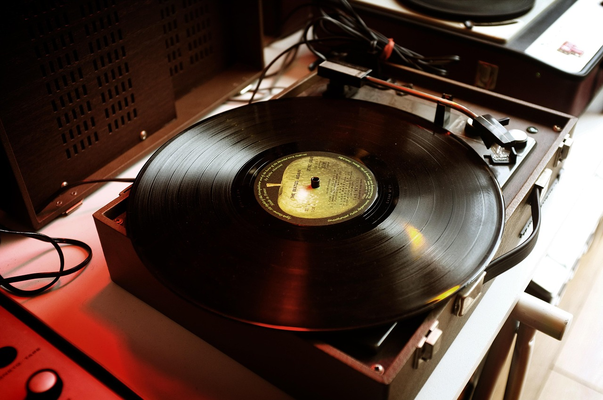

Boom Bap

Boom Bap is one of the most iconic subgenres of rap. Originating in New York City during the late 80s/early 90s,
this genre was one of the most prominent styles of rap in the Golden Age of Hip-hop.
The name "Boom Bap" comes from the sound of the drums. The hard-hitting "BOOM" of the kick drum
and the thunderous "BAP" of the snare gave the genre its iconic name and sound.
The boom bap style of music usually consists of three components: Acoustic kicks and snares, a sample
(usually taken from a jazz or soul record),
and of course, lyrics being rapped over the beat.
Some notable boom bap producers include DJ Premier, J-Dilla, RZA, Pete Rock, and Madlib, just to name a few.
They all have their own distinct styles, but they all fall under the boom bap genre.
Many of the best rappers in the history of hip-hop come from the boom bap genre. A few examples are:
Nas, Biggie, MF Doom, Wu-Tang Clan, and Jay-Z. Also, some of Eminem's early work can be considered boom bap, but with more of a pop influence in it.
There are many other prominent voices in the boom bap subgenre, but these are some of the best. Boom bap lyrics are a very big part of the genre. The topics typically talked
about include personal struggles, social issues, urban life, using intricate rhyme schemes to tell stories in their songs.
The combination of vivid storytelling, hypnotizing instrumentals and powerful delivery the reason boom bap is
considered one of, if not the most iconic hip-hop subgenre of all time.
Recommended Boom Bap Albums
Illmatic by NasMadvillainy by MF Doom and Madlib
Ready to Die by The Notorious B.I.G.
Reasonable Doubt by Jay-Z